No es Magia, es Ciencia
Cómo conversar mejor con asistentes de IA
2025-04-02
🤖 A.I. en el día a día
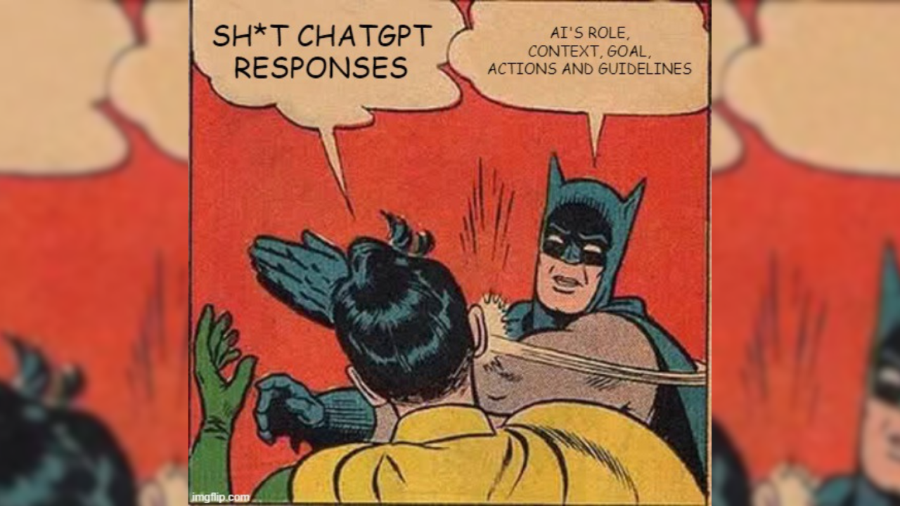
🎯 Objetivos
- Comprender los LLM: Definición, funcionamiento y aplicaciones.
- Asistentes Virtuales: Uso, prompts y desafíos comunes.
- Ética: Consideraciones y buenas prácticas.
No es Magia, es Ciencia
¿ Qué son los LLM ?
📖 Large language Model
- 🧠 Los LLMs generan lenguaje natural tras entrenarse con grandes volúmenes de texto.
- 🤖 Se usan en chatbots, asistentes virtuales y tareas de procesamiento de lenguaje.
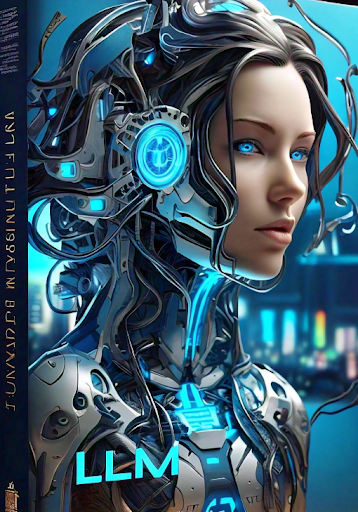
📖 Características LLM
- 📦 Entrenados con billones de parámetros y textos masivos
- 🛠️ Adaptables a múltiples tareas (traducción, resumen, Q&A, etc.)
- 🌍 Aplicables en dominios diversos: salud, educación, negocios

⏳ Historia de los LLM
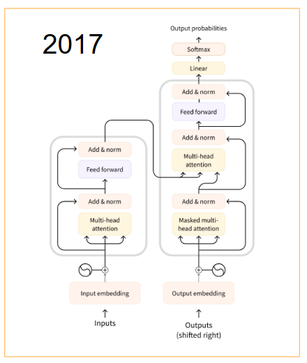
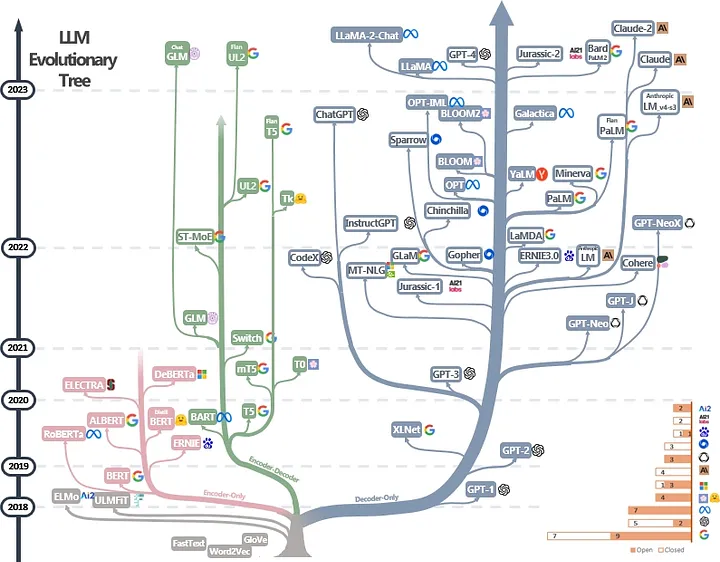
🔥 Desafío
¿Qué contiene la siguiente cadena de bits?
00000000 00101010
00000000 00101010
Podría ser el número 42 escrito en binario…
00000000 00101010
Podría ser el carácter * en la convención ascii…
00000000 00101010 00000101 00000101 00000101 00000101
Podría ser parte de un número decimal, 0.4523 o \(\pi\)…
10000101 00100001 01000111 00001000 00101010 01000101 11111111 11001101 01000111 00000101 00000101 01110111
Podría ser parte de un archivo multimedia (video, imagen, audio, etc.)…
Representación
- TODO en el computador son bits
representación=bits+contexto
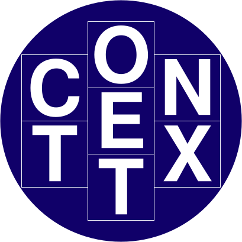
¿Cómo representar una palabra?

📝 Representación textual
Transcribir texto es guardar letras como bits.
ASCII
- 1 byte (8 bits): 128 carácteres posibles
- 0 (48) … 9 (57)
- A (65) … Z (90)
- a (97) … z (122)
- Problema: Faltan muchos carácteres: Ñ, ñ, á, é, í, ó, ú, u
UTF-8
- 1 a 4 bytes (8 a 32 bits)
- Mantiene ASCII sin cambios
- Permite representar alfabetos latinos, griego, árabe, … además de caracteres chinos, japoneses y coreanos
- Incluye emojis 😁, simbolos ✅ y mil cosas más 🗿
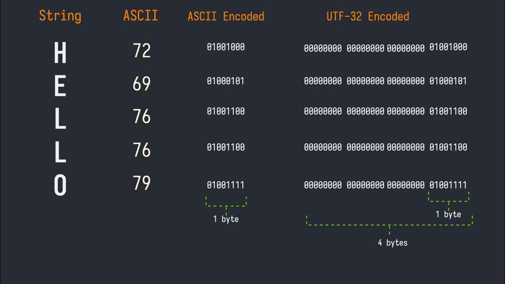
🧠 Representación semántica
- Semántica significa el sentido o significado de las palabras.
- Necesitamos guardarla como un todo o dividirla en partes con sentido (tokens).

💡 Aprendizajes
- Palabra ≠ Token
- Cada token tiene un ID único
- En inglés, 100 tokens ≈ 75 palabras
- Dos palabras iguales pueden tener tokens distintos, según el contexto
⚙️ Diagrama técnico de un LLM
Diagrama de funcionamiento de un LLM que se filtró de OpenAI:
¡¡¡No difundir!!!
⚙️ Diagrama técnico de un LLM

💡 Aprendizajes
- El LLM no reflexiona, solo predice el token más probable.
- La predicción es secuencial, token por token.
- No tiene memoria: siempre parte desde cero.
No es Magia, es Ciencia
¿Qué son los Prompts?
🤖 Asistentes Virtuales Inteligentes
Los asistentes virtuales impulsados por IA facilitan la comunicación, automatización y soporte en diversas industrias.
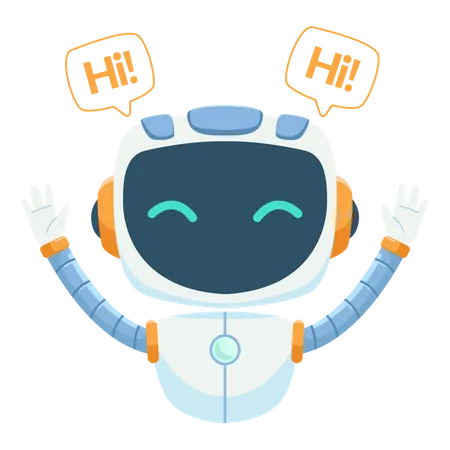
🤖 Asistentes Virtuales Inteligentes
Asistentes más destacados:
📱¿Qué podemos hacer?
- 🎓 Educación: Tutor virtual.
- 🩺 Salud: Asistencia en consultas.
- 📝 Contenido: Redacción y resumen.
- 💻 Software: Generación/corrección código.
- 💬 Cliente: Respuestas automáticas.
📝 Prompts en ChatGPT
Los prompts son las instrucciones que se le dan a un modelo de lenguaje, como ChatGPT, para generar una respuesta o realizar una tarea específica. Pueden ser preguntas, frases o directrices que guían el modelo hacia el resultado deseado.
📝 Prompts en ChatGPT
Pregunta directa: “¿Qué es la inteligencia artificial?”
Instrucción: “Escribe una historia corta sobre un viaje al espacio.”
Comando: “Genera un código Python para calcular el promedio de una lista.”
🎯 Actividad: ¡Probemos algunos Prompts!
Estructura de un Buen Prompts
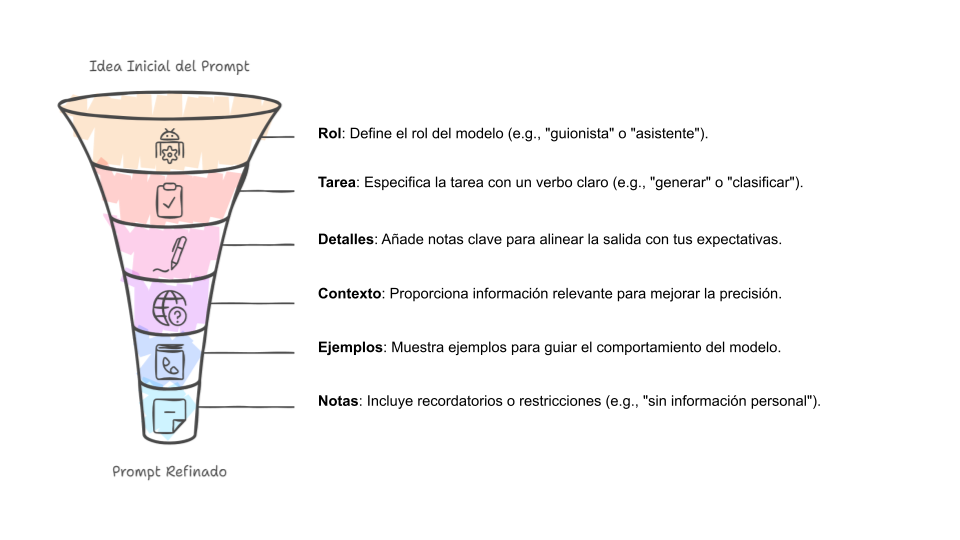
🧠 Estructura de un Buen Prompt
Prompt:
👎 Resultado muy genérico, sin explicación ni opciones personalizadas.
Prompt:
Eres un profesor de programación enseñando a estudiantes principiantes. Tu tarea es crear un ejemplo en Python para ordenar una lista de números. Explica paso a paso el código, usando comentarios. Usa dos métodos: el método `.sort()` y el algoritmo de burbuja. Incluye ejemplos de entrada y salida. El objetivo es ayudar a comprender el funcionamiento de ambos métodos.
👍 El resultado incluye: código claro, explicaciones y enfoque didáctico.
- 👨🏫 Rol: Define que el modelo actúe como profesor
- 📌 Tarea: Especifica crear un ejemplo y explicar
- 🧩 Detalles: Métodos
.sort()y burbuja - 🎓 Contexto: Enseñanza a estudiantes
- 📝 Extras: Comentarios y ejemplos de uso
♟️Técnicas para Mejorar los Prompts
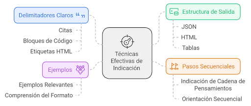
♟️Técnicas para Mejorar los Prompts
Definición: Se da un prompt sin ejemplos previos, y se espera que el modelo genere una respuesta basada en su conocimiento previo.
✨ Ejemplo de prompt:
“¿Qué es la fotosíntesis?”
✅ Esperado:
“La fotosíntesis es el proceso por el cual las plantas convierten la luz solar en energía química utilizando dióxido de carbono y agua.”
Definición: Se proporcionan pocos ejemplos en el prompt para ayudar al modelo a generar una respuesta más precisa.
✨ Ejemplo de prompt:
“Traduce las siguientes frases al francés:
- Hello → Bonjour
- Thank you → Merci
- Good morning → ?”
✅ Esperado:
“Good morning → Bonjour”
Definición: Se fomenta el razonamiento paso a paso (Chain-of-Thought ) para obtener respuestas más estructuradas y detalladas.
✨ Ejemplo de prompt:
“Si un tren viaja a 80 km/h y recorre 240 km, ¿cuánto tiempo tarda en llegar? Explica tu razonamiento.”
✅ Esperado:
“El tren viaja a 80 km/h y debe recorrer 240 km. Para calcular el tiempo, usamos la fórmula:
tiempo = distancia / velocidad
240 km ÷ 80 km/h = 3 horas.
Por lo tanto, el tren tarda 3 horas en llegar.”
Definición: Se descompone una tarea compleja en múltiples prompts encadenados, donde la salida de un prompt se usa como entrada para el siguiente.
✨ Ejemplo de prompt:
Paso 1: “Resume en 3 frases la Revolución Industrial.”
Paso 2: (Usando la respuesta del primer prompt) “Ahora expande cada frase en un párrafo detallado.”
✅ Esperado:
Paso 1: “La Revolución Industrial marcó el inicio de la producción mecanizada, el crecimiento de las ciudades y el avance del transporte.”
Paso 2: Se genera un desarrollo más detallado de cada punto.
No es Magia, es Ciencia
Una mirada crítica a los LLMs
⚠️ Problemas comunes con los LLM
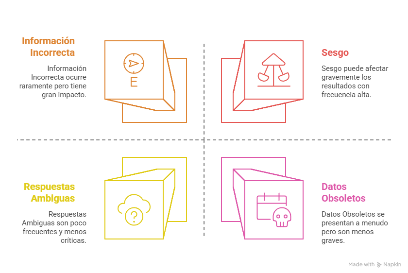
⚠️ Problemas Comunes con los LLM
| 🚨 Error | 💬 Prompt | ❌ Respuesta Incorrecta |
|---|---|---|
| Información Incorrecta | ¿Cuántos continentes hay? | Hay 4 continentes. |
| Datos Obsoletos | ¿Quién es el presidente de Argentina? | Mauricio Macri. |
| Respuesta Ambigua | ¿País más grande? | Podría ser China o EE.UU. |
| Sesgo o Estereotipo | ¿Quién programa mejor? | Los hombres, por su lógica natural. |
⚖️ Ética en el Uso de la A.I.

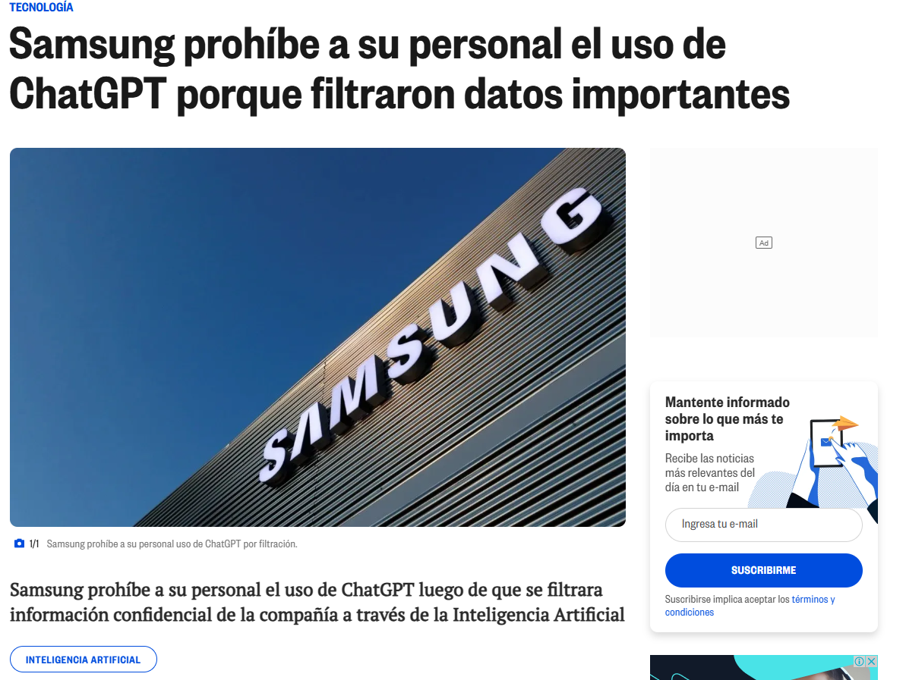
⚖️ Ejemplos
Definición: Se debe evitar compartir información sensible como contraseñas, tokens de acceso o datos privados en prompts de IA.
❌ Mal prompt:
“Mi API key es
1234-5678, y mi contraseña esmypassword123. ¿Puedes conectarte por mí?”
✅ Buen prompt:
“¿Cómo guardar credenciales en un archivo
.envy cargarlas de forma segura en Python?”
Definición: Los prompts no deben solicitar ni exponer datos personales. Es esencial proteger la identidad y privacidad de las personas al interactuar con modelos de lenguaje.
❌ Prompt inadecuado:
“Tengo el RUT y dirección de una persona. ¿Puedes decirme su número de teléfono o redes sociales?”
✅ Prompt recomendado:
“Explícame cómo anonimizar datos sensibles correctamente.”
Definición: Los prompts deben promover el razonamiento y aprendizaje, evitando solicitudes que generen respuestas incorrectas o superficiales.
❌ Prompt inadecuado:
Paso 1: “Resuelve esta ecuación sin explicaciones: $x^2 + 5x + 6 = 0$.”
Paso 2: “Solo quiero la respuesta final.”
✅ Prompt recomendado:
Paso 1: “Resuelve paso a paso la ecuación $x^2 + 5x + 6 = 0$ usando factorización.”
Paso 2: “Explica por qué se eligen esos factores y sugiere otro método de resolución.”
No es Magia, es Ciencia
Actividad
🤖 Actividad: ¡Crea tu chatbot!
Vamos a crear un chatbot divertido en NUT-AI que responda preguntas sobre un tema.
Ejemplos:
- 🧙 Un mago que enseña matemáticas
- 🧑🍳 Un chef que habla como robot
- 🦸 Un superhéroe que da consejos de salud
- Júntate en grupo (2 a 4 personas)
- Elige un tema
- Escribe cómo debe hablar el bot
- Prueba hacerle preguntas
- Muestra tu bot a los demás 🎉
- El texto que le da personalidad
- 5 preguntas + respuestas
- Una imagen del bot funcionando
- Una idea o reflexión (opcional)
| ✅ Qué se evalúa | Puntos |
|---|---|
| Creatividad 🎨 | 20 |
| Claridad 🧠 | 20 |
| Funciona bien ⚙️ | 20 |
| Buenas respuestas 💬 | 20 |
| Presentación 🎤 | 20 |
| Total | 100 |
No es Magia, es Ciencia
Conclusiones
💡Conclusiones
🤔 Entender la importancia de los prompts: Un buen diseño de prompts es clave para obtener respuestas más precisas y útiles al interactuar con modelos de lenguaje como ChatGPT.
🌱 Aplicaciones y uso responsable: Los modelos de lenguaje tienen un gran potencial, pero es crucial utilizarlos de manera ética y responsable.
🚀 Evolución y futuro de los LLM: La IA conversacional sigue mejorando, y los avances esperados tendrán un gran impacto en cómo interactuamos con la tecnología en el futuro.
🎉 ¡Gracias por Participar!
🔗 Nuestro Sitio Web: seth-nut.github.io/resources